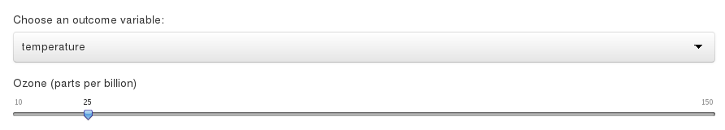
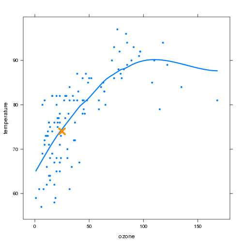

The Environmental Prediction App uses the environmental dataset in the lattice package. This dataset contains the atmospheric environmental conditions in New York City from May to September of 1973
José Carlos García
Software Developer
The Environmental Prediction App uses the environmental dataset in the lattice package. This dataset contains the atmospheric environmental conditions in New York City from May to September of 1973
The Environmental Prediction App predicts the radiation, temperature or wind values using the ozone as a predictor
The user selects the outcome variable and the ozone parts per billion

And the predicted valued is shown
## [1] 74.01
A orange X marks the prediction on the regression line
